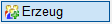
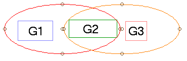
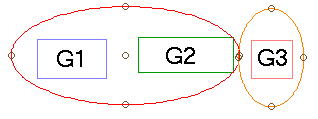

")
.png "Gruppe")

Gruppen erstellen und einzelne Zeichenelemente zuweisen. Die Gruppen können individuell benannt und mit einer Beschreibung versehen werden.
·Durch das Gruppieren von Elementen werden ihre Eigenschaften nicht geändert, so dass alle Elemente auf ihren eigenen Ebenen und Folien bleiben.
·Gesperrte Elemente können nicht ausgewählt und gruppiert werden.
So wird's gemacht:
§Ziehen Sie einen Rahmen durch das Anklicken von zwei Punkten um die Zeichenelemente, die in einer Gruppe zusammengefasst werden sollen, oder klicken Sie einzelne Elemente an. [1.Punkt/Element]; [2.Punkt].
-Die Zeichenelemente werden markiert.
-Um Elemente wieder abzuwählen, klicken Sie im unteren Funktionsbereich auf Entfer. Ziehen Sie einen Rahmen um die entsprechenden Elemente oder klicken Sie einzelne Elemente an. Bei gedrückter Umschalttaste (Shift) wird automatisch der Entfer-Modus aktiviert – am Cursor wird ein Minuszeichen eingeblendet.
§Bestätigen Sie die Auswahl mit Rechtsklick.
§Geben Sie optional einen Gruppennamen sowie eine Beschreibung ein. Bestätigen Sie die Eingaben jeweils mit der Eingabetaste. [Name]; [Beschreibung].
Die Gruppe wird erstellt und Sie können sofort eine weitere Gruppe erzeugen.
|
Hinweis: |
|
Wenn Sie eine bereits erzeugte Gruppe in einer neuen Gruppe gruppieren, wird die bereits erzeugte Gruppe eine Untergruppe der neuen Gruppe. |

|
Tipps: |
|
·Wenn Sie sich in [Konst3 | Gruppe | Erzeug] befinden und die Auswahlfunktion ·Sie können in der unteren Menüleiste auf |

 oder
oder  gewählt haben, können Sie den Mauszeiger auf ein Zeichenelement bewegen, um die gesamte Gruppe hervorzuheben. Aus bereits erstellten Gruppen können Sie weitere Gruppen erstellen. Klicken Sie jeweils auf ein Element einer vorhandenen Gruppe und folgen Sie der Abfrage.
gewählt haben, können Sie den Mauszeiger auf ein Zeichenelement bewegen, um die gesamte Gruppe hervorzuheben. Aus bereits erstellten Gruppen können Sie weitere Gruppen erstellen. Klicken Sie jeweils auf ein Element einer vorhandenen Gruppe und folgen Sie der Abfrage. klicken und dann auf ein Element, um sich anzeigen zu lassen, ob dieses gruppiert ist und gegebenenfalls in welchen Gruppen es enthalten ist.
klicken und dann auf ein Element, um sich anzeigen zu lassen, ob dieses gruppiert ist und gegebenenfalls in welchen Gruppen es enthalten ist.Gruppen verschachteln
 |
 |
Verschachtelung ist so nicht möglich! Wenn G1 und G2 eine Gruppe bilden, kann G2 nicht mehr mit G3 gruppiert werden. |
So können Gruppen verschachtelt werden. Die Gruppen G1/G2 und G3 können eine neue, übergeordnete Gruppe bilden. |
Zugehörige Aufgaben:
·Gruppen erzeugen und verwalten (Gruppenmanager)
·Gruppierte Elemente auswählen und bearbeiten
Siehe auch: